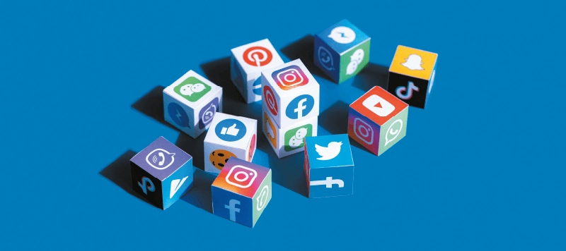
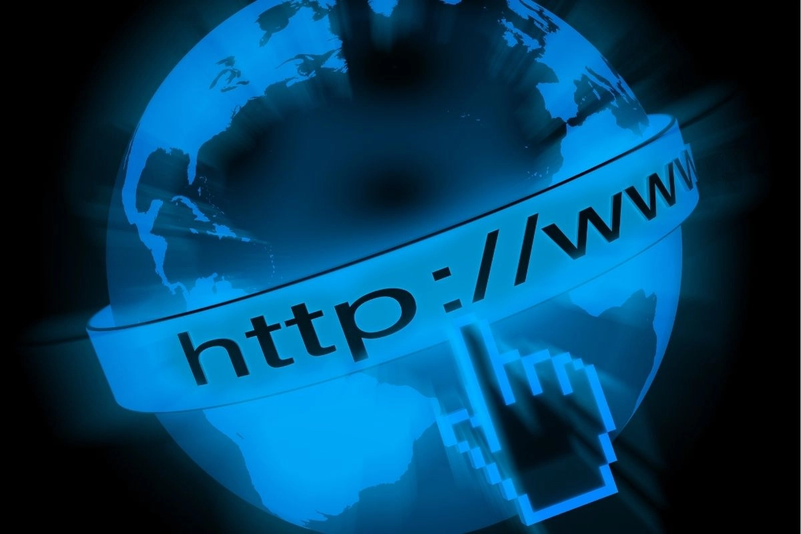
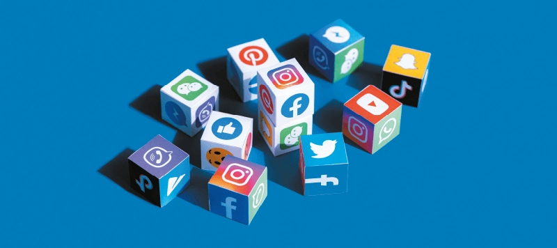
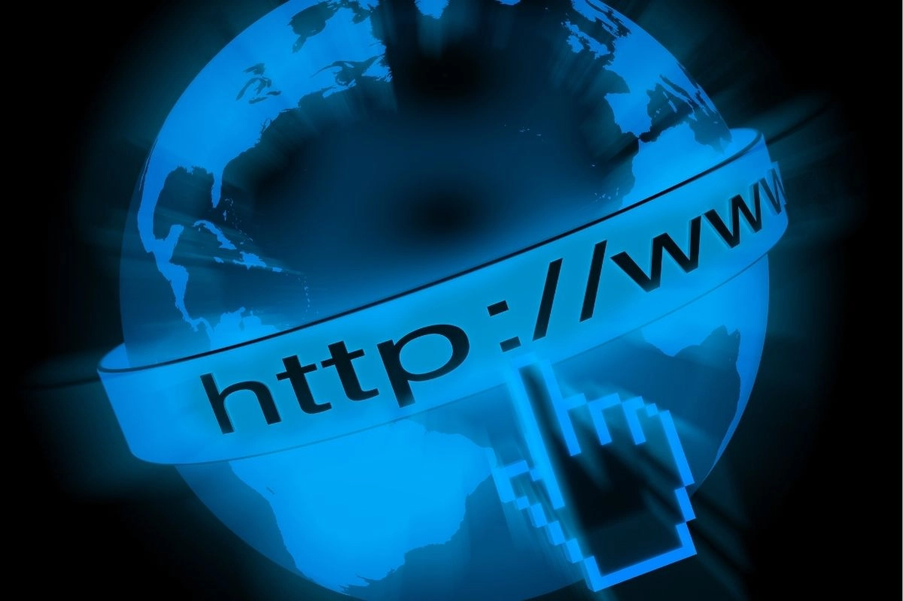

Impacto da internet no Consumo?
O impacto da internet no consumo tem sido transformador, alterando significativamente a forma como as pessoas compram produtos e serviços. Com o advento da internet, o acesso a informações, variedade de produtos e comparação de preços ficou mais fácil e rápido, promovendo uma mudança drástica nos hábitos de consumo em todo o mundo.
 Um dos principais impactos foi o surgimento do e-commerce, que possibilita a compra de itens de qualquer lugar do mundo sem sair de casa. Plataformas como Amazon, Mercado Livre e Alibaba se tornaram gigantes do varejo, permitindo que os consumidores acessem uma ampla gama de produtos a preços competitivos. Esse novo modelo de consumo eliminou barreiras geográficas e temporais, permitindo que as compras sejam feitas 24 horas por dia, com entrega rápida e comodidade.
Um dos principais impactos foi o surgimento do e-commerce, que possibilita a compra de itens de qualquer lugar do mundo sem sair de casa. Plataformas como Amazon, Mercado Livre e Alibaba se tornaram gigantes do varejo, permitindo que os consumidores acessem uma ampla gama de produtos a preços competitivos. Esse novo modelo de consumo eliminou barreiras geográficas e temporais, permitindo que as compras sejam feitas 24 horas por dia, com entrega rápida e comodidade.
 Além disso, as redes sociais desempenham um papel crucial no consumo, influenciando as decisões de compra. Plataformas como Instagram, YouTube e TikTok criaram uma nova dinâmica, onde influenciadores e marcas promovem produtos diretamente para seus seguidores. Esse tipo de marketing digital cresceu exponencialmente, criando um mercado onde as recomendações de influenciadores têm tanto peso quanto a publicidade tradicional. O "social commerce" tem mudado a relação entre consumidores e empresas, tornando o processo de compra mais pessoal e interativo.

Outro impacto importante da internet no consumo é a facilidade de comparar preços e ler avaliações. Antes da internet, os consumidores tinham que visitar diversas lojas físicas para encontrar a melhor oferta. Hoje, é possível comparar instantaneamente os preços de diferentes vendedores, bem como ler comentários de outros consumidores sobre a qualidade dos produtos e serviços. Isso empodera os consumidores, tornando-os mais críticos e conscientes nas suas decisões de compra.

Por fim, o acesso a dados e o uso de algoritmos de personalização revolucionaram o consumo. As empresas agora utilizam o histórico de navegação e preferências dos usuários para oferecer anúncios e recomendações personalizadas. Isso cria uma experiência de compra mais eficiente, mas também levanta questões sobre privacidade e o uso ético dos dados dos consumidores.
Além disso, as redes sociais desempenham um papel crucial no consumo, influenciando as decisões de compra. Plataformas como Instagram, YouTube e TikTok criaram uma nova dinâmica, onde influenciadores e marcas promovem produtos diretamente para seus seguidores. Esse tipo de marketing digital cresceu exponencialmente, criando um mercado onde as recomendações de influenciadores têm tanto peso quanto a publicidade tradicional. O "social commerce" tem mudado a relação entre consumidores e empresas, tornando o processo de compra mais pessoal e interativo.

Outro impacto importante da internet no consumo é a facilidade de comparar preços e ler avaliações. Antes da internet, os consumidores tinham que visitar diversas lojas físicas para encontrar a melhor oferta. Hoje, é possível comparar instantaneamente os preços de diferentes vendedores, bem como ler comentários de outros consumidores sobre a qualidade dos produtos e serviços. Isso empodera os consumidores, tornando-os mais críticos e conscientes nas suas decisões de compra.

Por fim, o acesso a dados e o uso de algoritmos de personalização revolucionaram o consumo. As empresas agora utilizam o histórico de navegação e preferências dos usuários para oferecer anúncios e recomendações personalizadas. Isso cria uma experiência de compra mais eficiente, mas também levanta questões sobre privacidade e o uso ético dos dados dos consumidores.
 Em resumo, a internet transformou o consumo ao tornar as compras mais acessíveis, rápidas e personalizadas, ao mesmo tempo que fortaleceu o poder de escolha do consumidor. Contudo, essa revolução digital também trouxe desafios relacionados à privacidade e à transparência nas relações entre empresas e consumidores.
Em resumo, a internet transformou o consumo ao tornar as compras mais acessíveis, rápidas e personalizadas, ao mesmo tempo que fortaleceu o poder de escolha do consumidor. Contudo, essa revolução digital também trouxe desafios relacionados à privacidade e à transparência nas relações entre empresas e consumidores.
Trabalho de Pedro S.P.
Miguel
Davi S. 9°A